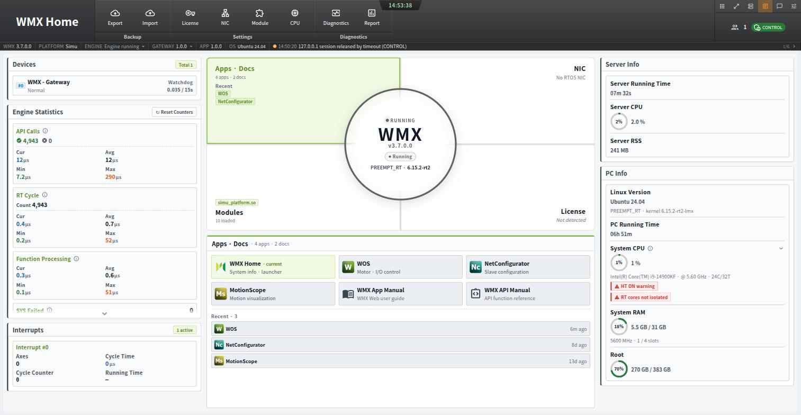
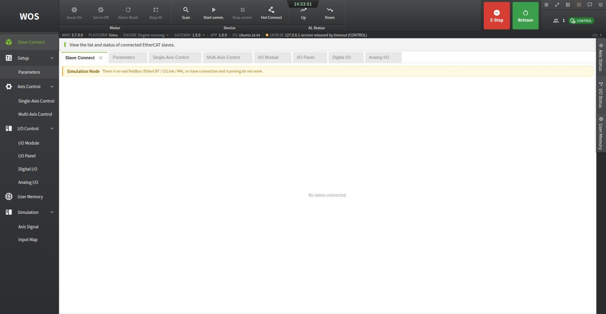
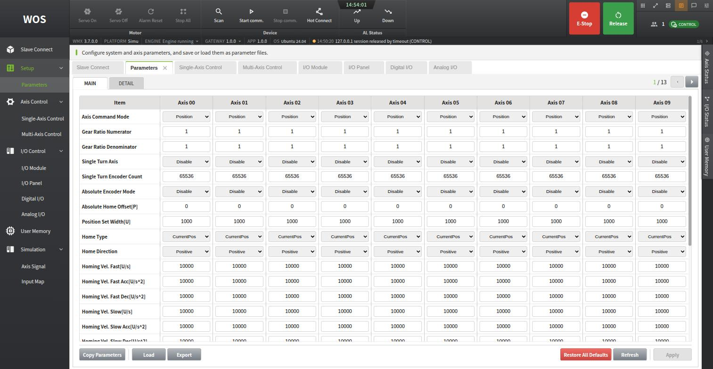
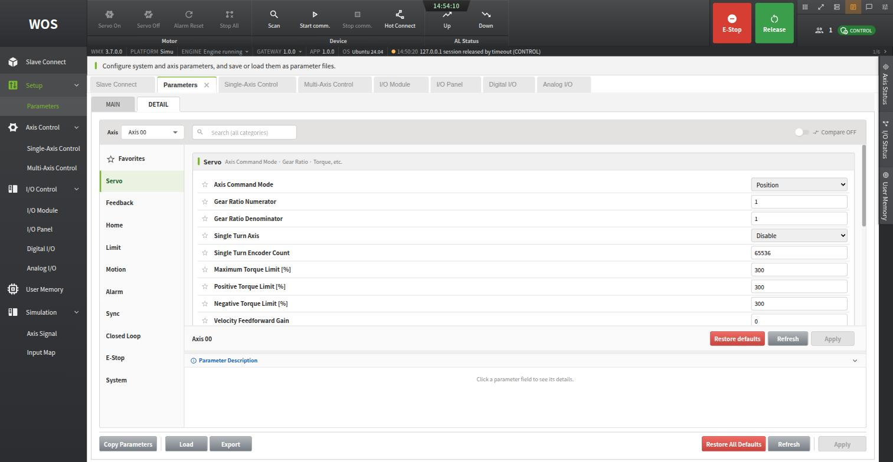
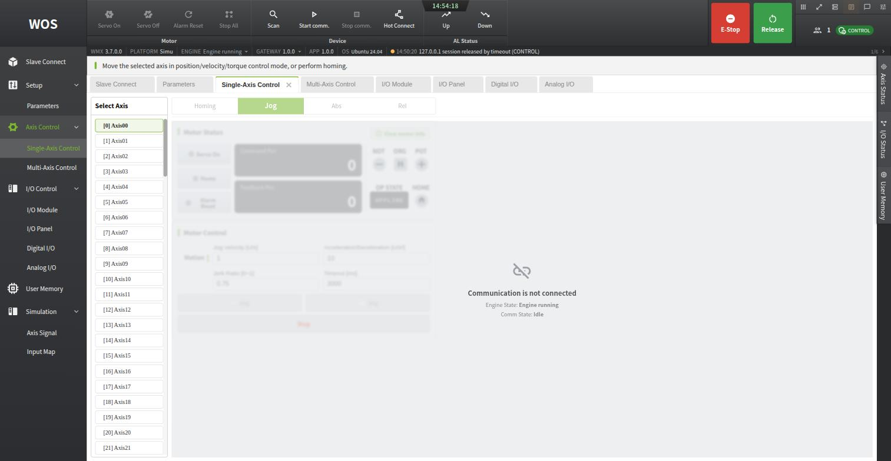
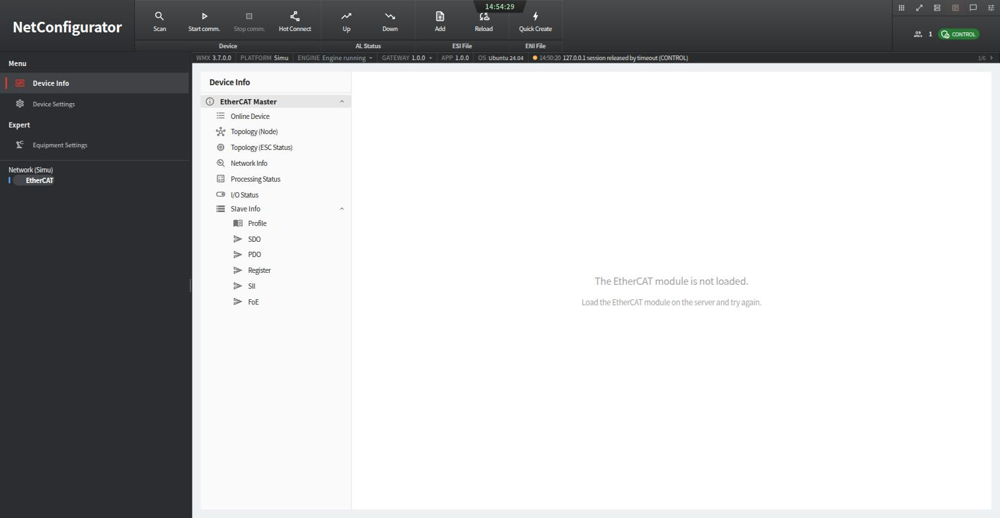
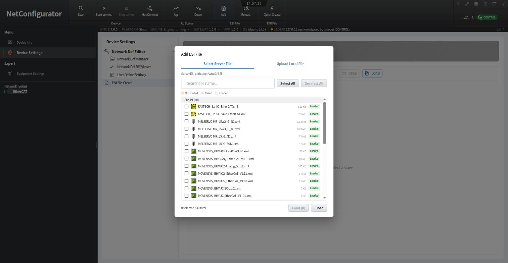
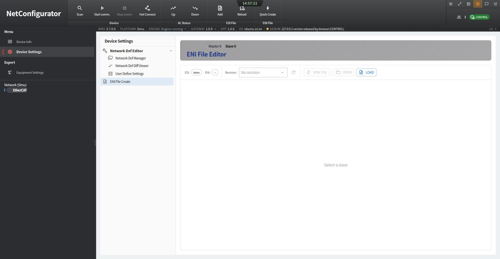
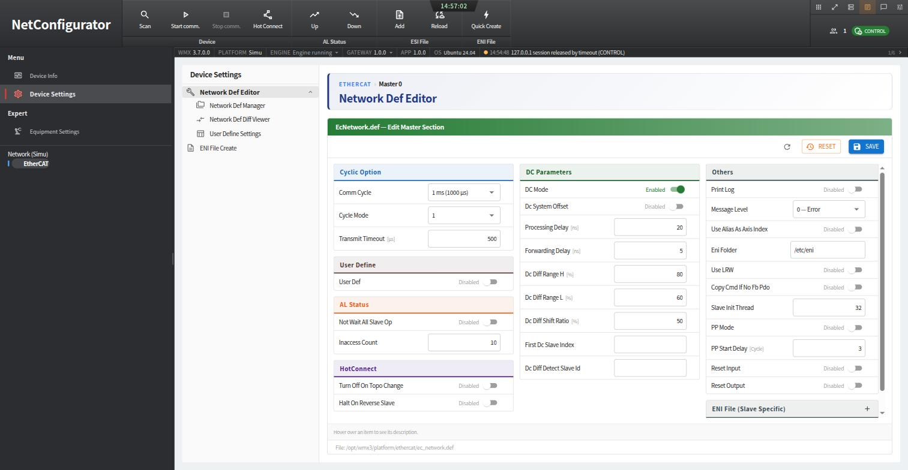

WMX Web Tools (WOS, NetConfigurator, MotionScope)#
Start here. Before a robot is worth bringing up in ROS 2, its EtherCAT network has to be described, its axis parameters have to be set, and each axis has to be proven to move the way you think it does — and the WMX Runtime ships a browser UI that does all three, talking to the WMX engine directly.
That makes it the tool for the two pages that follow. It is where you generate the ENI file and set and export the axis parameters that Robot Parameter Configuration and Validation describes, and where you can jog an axis for the checks in First Motion on Hardware with no ROS 2 node in the path. Later, when something misbehaves, it is also the fastest way to answer “is this a WMX R2 problem or an engine problem?”
Important
These tools are part of the WMX Runtime, not of WMX R2. They are
installed under /opt/wmx3/ and are documented by MOVENSYS in the
manuals described in Offline manuals. This page covers what they
are, how to start them, and how they line up with the ROS 2 interface.
Starting the gateway#
One binary, wmx-gateway, serves all four apps. It needs root because it
opens the WMX device:
sudo /opt/wmx3/web/gateway/wmx-gateway
Then open the hub in a browser:
https://0.0.0.0:5050/
Note
It is HTTPS, with a self-signed certificate.
http:// on port 5050 does not answer — the gateway serves TLS from
/opt/wmx3/web/gateway/certs/. The browser will warn about the
certificate on first visit; accept it to continue. 0.0.0.0 works as
the host in the URL because that is the bind address the certificate is
issued for.
The ports come from /opt/wmx3/web/gateway/config/gateway.toml and can be
changed there:
Port |
App |
Purpose |
|---|---|---|
|
WMX Home |
Dashboard and launcher for the other three. Engine state, engine statistics, loaded modules, NIC and platform, license, backup (parameter export and import), and diagnostics. |
|
WOS |
Motor and I/O control: parameters, single- and multi-axis motion, homing, digital and analog I/O, user memory. |
|
NetConfigurator |
EtherCAT slave configuration, device info and access, and ESI / ENI file management. |
|
MotionScope |
Motion visualization — trace and plot axis signals over time. |
|
gRPC back end |
How the browser apps reach the engine. Not used directly. |


WMX Home on port 5050. The engine state and statistics are on the left, the four apps and the two manuals in the centre, and the host’s NIC, license, and RT status on the right.#
The top status bar of every app reports the engine it is attached to:
WMX 3.7.0.0, PLATFORM Simu or EtherCAT, ENGINE Engine running,
and the loaded ESI notices. That line is the quickest confirmation that the
Module.ini platform switch in Testing WMX R2 took
effect.
Warning
WOS commands real motion, and it is a second client on the same engine.
The WMX engine serves both WOS and the WMX R2 nodes. A jog started in WOS and a trajectory executed from ROS 2 are two clients commanding the same physical axis, and nothing arbitrates between them. Run one at a time.
If wmx_engine_node reports a device lock error at startup
(CreateDeviceLockError, retried five times), check what else has the
engine open — a gateway left running is a common cause.
WOS#
WOS (WMX Operating Studio) is the one you will use most, because it covers the same ground as the general nodes in Testing WMX R2.
Its layout is a top command area, a left menu, a central work area, and right-edge tabs for Axis Status, I/O Status, and User Memory. The top command buttons are grouped Motor (Servo On, Servo Off, Alarm Reset, Stop All), Device (Scan, Start comm., Stop comm., Hot Connect), AL Status (Up, Down for slave state steps), and a red E-Stop with its Release.


WOS, showing the command groups across the top and the left menu. On the simulation platform, Slave Connect reports that there is no real fieldbus.#
The basic workflow is Scan → Start Communication → confirm Communicating
→ Servo On → control. Until communication is connected, the motion controls
are disabled; hovering a disabled button shows what it is waiting for.
Setup → Parameters#
This screen is the WMX parameter file, as a grid. Axes are columns
(Axis 00, Axis 01, …), parameters are rows, and 128 axes are paged ten
at a time. The MAIN tab shows the core items — Axis Command Mode, Gear
Ratio Numerator and Denominator, Single Turn Encoder Count, Absolute Encoder
Mode, Absolute Home Offset, Home Type, Home Direction, homing velocities. The
DETAIL tab groups everything by category — Servo, Feedback, Home, Limit,
Motion, Alarm, Sync, Closed Loop, E-Stop, System — with a search box, a
per-axis selector, a compare toggle, and a description pane for the selected
parameter.


Setup → Parameters, MAIN tab: the WMX parameter file as a grid, with one column per axis and the page selector at the top right.#


The DETAIL tab takes one axis at a time and groups every parameter by category, with a search box and a description pane.#
Three buttons at the bottom matter for WMX R2:
Button |
Does |
|---|---|
Export |
Writes the engine’s current parameter values to a file, on the server
or downloaded to your PC. This is how you produce a
|
Load / Import |
Loads a saved parameter file into the engine — the GUI equivalent of
|
Copy Parameters |
Copies one axis’s values to other axes. Useful when a robot’s joints share a drive specification. |
Changes are staged until you press Apply, and edits survive page changes so a multi-page edit applies at once.
Warning
Changing the gear ratio changes the meaning of every distance and velocity value afterwards — in WOS and in every ROS 2 call, because they are the same engine-side user units. Re-check travel distance, velocity, and homing settings after any change. See Robot Parameter Configuration and Validation.
Axis Control → Single-Axis Control#
Pick an axis from the list, then use the Homing, Jog, Abs, and
Rel tabs. The panel shows Servo On, Home, and Alarm Reset buttons;
commanded and feedback position; the NOT, ORG, and POT signals; and the OP
state. Jog takes a velocity, acceleration/deceleration, jerk ratio, and
timeout — the same four values as the jog_* parameters of
wmx_core_motion_node.


Axis Control → Single-Axis Control, with the Homing, Jog, Abs, and Rel tabs. The controls are disabled here because communication is not started — the panel states the engine and communication state rather than failing silently.#
This is the recommended way to do the low-speed single-axis checks in First Motion on Hardware before any ROS 2 node is involved: it removes the entire ROS 2 layer from the question of whether an axis moves the right way.
What each WOS screen corresponds to in ROS 2#
WOS |
WMX R2 equivalent |
|---|---|
Top bar → Servo On / Servo Off |
|
Top bar → Alarm Reset |
|
Top bar → Stop All |
|
Top bar → Scan / Start comm. / Stop comm. |
|
Top bar → Hot Connect |
|
Setup → Parameters (Load / Export) |
|
Setup → Parameters (Gear Ratio) |
|
Setup → Parameters (Axis Command Mode) |
|
Single-Axis Control → Homing |
|
Single-Axis Control → Jog |
|
Single-Axis Control → Abs / Rel |
|
Multi-Axis Control |
The same services with multi-element |
I/O Control → Digital I/O |
|
Right rail → Axis Status |
|
Slave Connect |
|
Note
In Simulation mode WOS shows an empty bus.
With the simulation platform enabled in Module.ini, WOS reports
“Simulation Mode — there is no real fieldbus (EtherCAT / CCLink / M4), so
slave connection and scanning do not work” and Slave Connect stays empty.
Parameters are still editable, because they live in the engine rather than
on the bus. Switch to the EtherCAT platform to use the device functions.
NetConfigurator — the ENI file#
Of the EtherCAT description files, the ENI is the only one you create. ESI files come from the device manufacturer; you register them and NetConfigurator uses them as the input that the ENI is built from.
File |
Comes from |
Role |
You do |
|---|---|---|---|
ESI |
The device manufacturer, one |
Describes a device’s specification and object dictionary. |
Register it once. Nothing to author. |
ENI |
Generated by NetConfigurator |
Describes the network configuration the master communicates with. |
Create it for your machine, and re-create it whenever the network changes. |


NetConfigurator. The ribbon’s two right-hand groups are ESI File (Add, Reload) and ENI File (Quick Create). The left menu holds Device Info, Device Settings, and Equipment Settings.#
Step 1 — register the manufacturer’s ESI files#
ESI File → Add opens a dialog with two tabs: Select Server File, which
lists what is already in the server’s ESI path (/opt/wmx3/ESI), and
Upload Local File, for an .xml your drive vendor supplied that is not
there yet. Each file shows a status of Not loaded, Failed, or Loaded.
Reload re-reads the folder and lists anything that failed.


Add ESI File. The runtime ships with 30 device descriptions already loaded — MOVENSYS, MELSERVO, FASTECH and others — so for a drive from a supported vendor there is usually nothing to add.#
Tip
If a security policy blocks uploading from your PC, put the file in
/opt/wmx3/ESI on the server and register it with Select Server File
instead.
Step 2 — create the ENI#
With the devices recognisable, generate the ENI from the network that is actually cabled up:
Scan — discovers the slaves and puts them in the device tree.
ENI File → Quick Create — builds the ENI from that scan.
Start Communication — verify. Every slave should reach
Op.
Re-create the ENI after any change to the network configuration. There are three routes to the same generation step: the ribbon’s Quick Create, the right-click menu on a device in the tree, and the ENI File Create screen under Device Settings, which is the one to use when you want to inspect what goes in rather than accept the defaults.


Device Settings → ENI File Create. The editor works per slave —
Master 0 › Slave 0 — and shows which ESI and which ENI revision that
slave currently resolves to. SYNC ESI is the step that pulls the
manufacturer’s ESI content into the ENI entry for that slave.#
Where the ENI is written#
The output folder is not fixed: it is the Eni Folder field in
Device Settings → Network Def Editor, whose Others column also carries
Use LRW, PP Mode, the slave-init thread count, and the reset-input and
reset-output flags. The editor’s title bar names the file it is editing —
EcNetwork.def — and its footer gives the path on disk,
/opt/wmx3/platform/ethercat/ec_network.def.


Device Settings → Network Def Editor, editing
/opt/wmx3/platform/ethercat/ec_network.def. Comm Cycle,
Transmit Timeout, and the DC parameters live here, and Eni Folder
on the right decides where generated ENI files are written.#
Note
On a stock install the ec_network.def file has no EniFolder key and
the field shows the built-in default. Check it before your first
Quick Create, so you know where to look for the result — and so the WMX
Runtime and the ENI stay together if you move either one.
The other Device Settings screens support the same file: Network Def Manager backs up, restores, compares, and applies definition files, Network Def Diff Viewer compares two of them, and User Define Settings edits user-defined slave entries as a table.
Note
Creating and deleting ENI files, and editing the network definition, affect the real communication configuration, so they require the Admin level and Control permission. Registering and reloading ESI only changes what the UI can display. A greyed-out Quick Create is a permission, not a fault.
Warning
The device tree separates Online from Offline.
Slaves under Online are what the scan actually found, and only those accept commands. Offline entries are built from ESI files and UserDefine entries come from the network definition file; both are view-only. A device you can see in the tree is not necessarily a device that is plugged in.
MotionScope#
Motion visualization: trace axis signals over time, review recorded history, and configure the chart. Use it when a move completes but does not look right — tracking error, blending between waypoints, or acceleration that does not match what the trajectory asked for. It sees the engine’s own signals, so it is measuring what the drives were actually commanded, not what ROS 2 believed it published.
Offline manuals#
The WMX Home dashboard links two manuals, both shipped with the runtime under
/opt/wmx3/Doc/Web/:
WMX App Manual (
Application/App_UserManual.zip) — the user guide for the four apps on this page, one page per screen, in English, Japanese, and Korean. It is the authoritative reference for anything described here.WMX API Manual (
API/API_UserManual.zip) — the reference for the WMX3 C++ SDK that WMX R2 is built on. See The WMX3 API Underneath WMX R2.